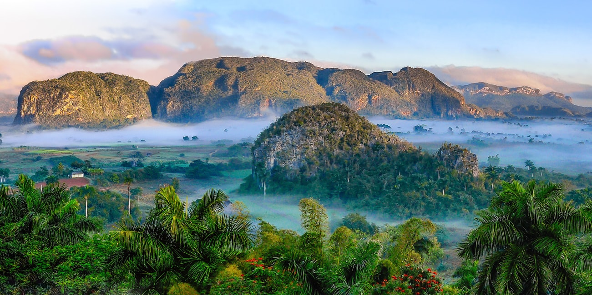
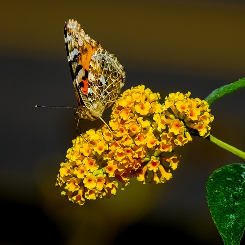
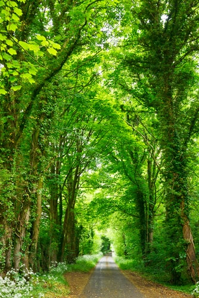
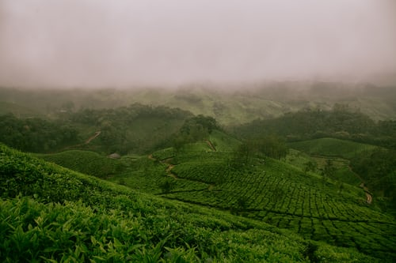
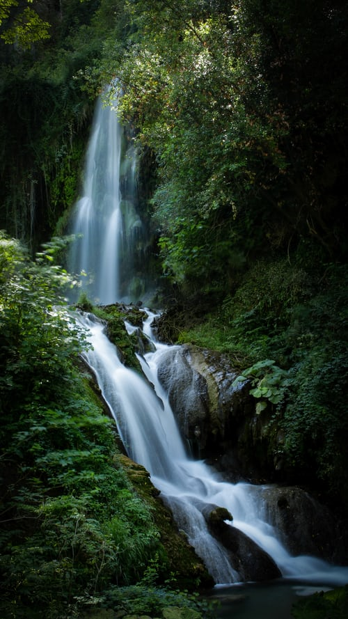
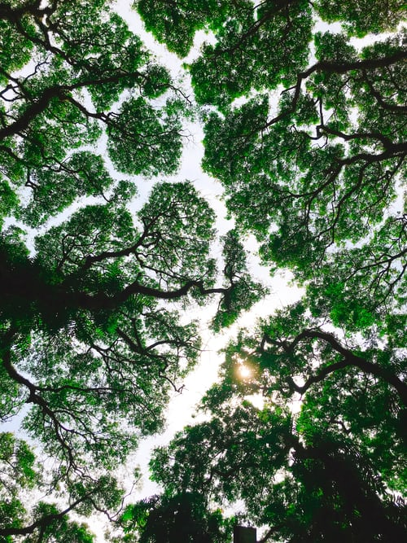

| Home | Quotes | Gallery | Quiz | Contact |

An enchanting view of a range of hills bordered by a ring of white clouds that give a silver lining. This view is supported by the glace of the blue rivers that circumferate the hills.

An eyecatching yellow flower to which the butterfly add more beauty and extacy.Nature in its best sense.

A greyscale road bordered by mother Nature.The sense of security we get when we traverse this path.The sense of Godliness and Naturality fills our way.
The Majestic ice covered Himalayas. The pride of India!!.The Eagle around adds to the majestic view!!

The Green Cover which is the most loved taste of SouthIndia.The Tea Estates as viewed from the arial gives an enchanting view of the Taste of SouthIndia!!

The enchanting and divine view of the Golden Temple of Amritsar safely bound and held on the hands of Nature.The bluish red sky makes the view more enchanting and makes people feel blessed to see the view.

An Amazing waterfall the looks like a bundle of blessing reaching us directly from the Heaven.The whitish snow like flow of water makes people yearn for a view of it.

The bright brown of the ever open and ever welcoming Thar Desert of India. A feather into India's cap the is already overflowing with feathers from mother Nature.

Look at the puzzle the Nature has drawn in between its trees and the canopy cover of the ever blue sky.Once can reach the Nature's maximum by this puzzle.
Get in Touch
©Copyright www.earthsparadise.com